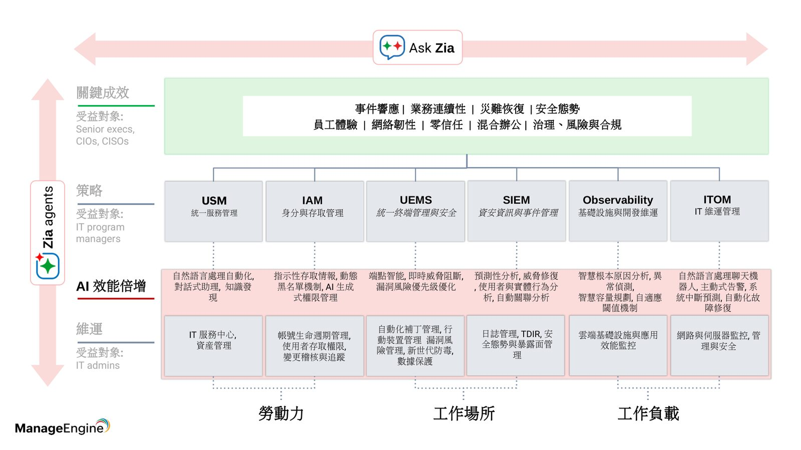
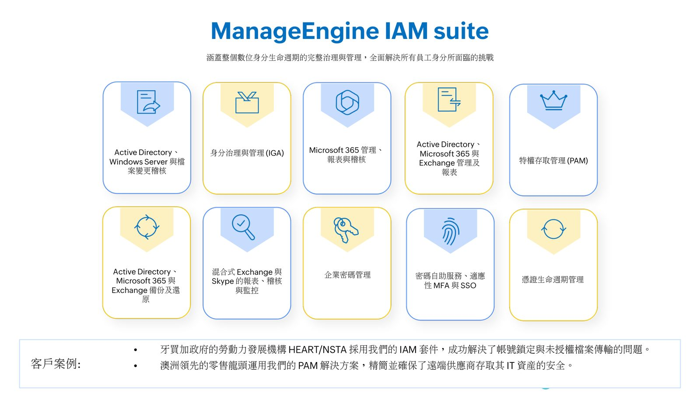
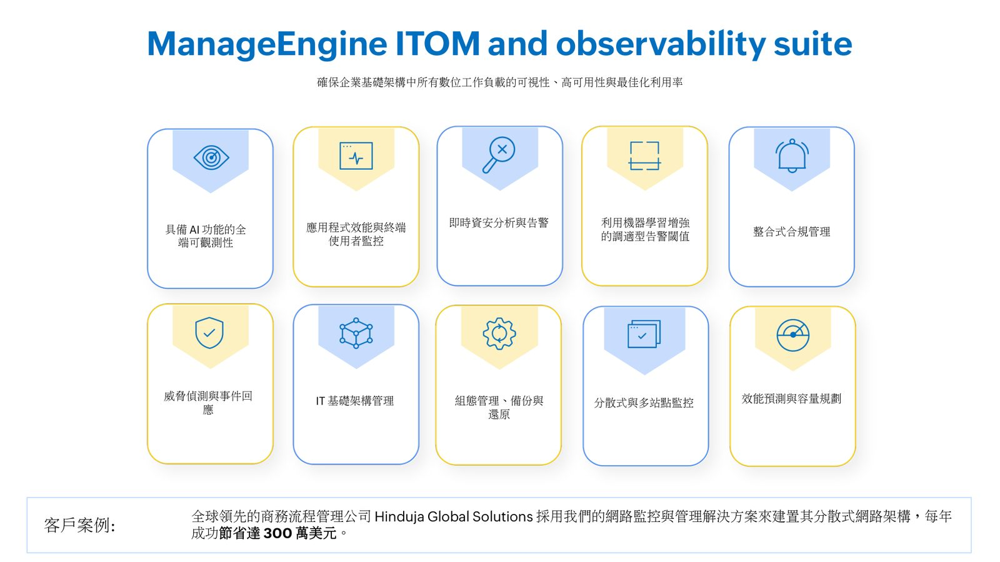
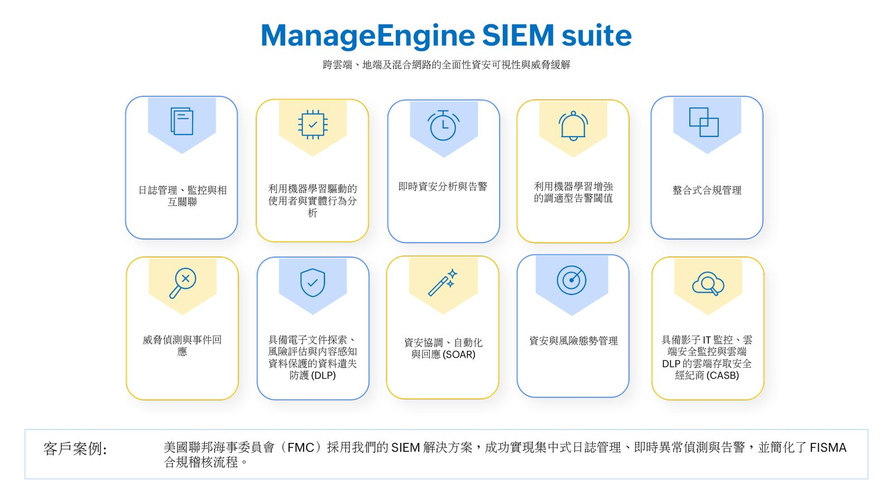

摘要
本場演講由 ManageEngine 的技術顧問 Victor Wong 主講，說明企業如何從「洞察系統」、「工作流系統」、「體驗系統」逐步邁向「智慧系統」，也就是所謂的「AI 準備就緒」階段——由 AI 為企業效力，而非企業勞師動眾地導入 AI。內容詳細介紹 ManageEngine 如何以統一終端管理與安全（UEMS）、資安資訊與事件管理（SIEM）、可觀測性（Observability）與 IT 維運管理（ITOM）等產品線，結合 AI/ML 逐步實現主動偵測、前瞻預測與智慧優化。
重點整理
- 數位轉型演進分為洞察系統、工作流系統、體驗系統，最終邁向由高效 AI 營運驅動的智慧系統
- ManageEngine 的實踐路徑分五階段：開放 API 與內部 LLM、Zoho 統一數據平台、Zia agents 自主維運、Agent Studio 與 Marketplace 多智能體協同、跨產品的 Ask Zia 對話式助理
- 某跨國水泥製造商採用 ManageEngine USM 解決方案後，每個月節省 4,167 個工作小時
- Lenskart 運用 USM 解決方案，將終端使用者問題解決率從 75% 提升至 98.8%
- 全球商務流程管理公司 Hinduja Global Solutions 採用網路監控管理方案，每年節省達 300 萬美元
重點圖片／架構圖




什麼是「AI 準備就緒」
演講指出數位轉型的四個演進階段：由數據紀錄驅動的洞察系統、由流程自動化驅動的工作流系統、由數位優先協作驅動的體驗系統，以及由高效 AI 營運驅動的智慧系統。大多數企業目前仍處於前幾個階段，而「AI 準備就緒」意味著數位轉型進入一個新階段：是 AI 為企業效力，而非企業在勞師動眾地導入 AI。演講也引用預測指出，到 2027 年 AI 的生產力價值將被視為衡量國力的主要經濟指標，並舉出 DeepMind 解決蛋白質折疊問題、Cineplex 透過 Power Platform 與生成式 AI 每年節省 30,000 小時工時、KPMG 生產力提升 50% 等案例。
IT 成長各階段與統一平台架構
現代數位企業的 IT 成長分為策略層與維運層，涵蓋統一服務管理（USM）、身分與存取管理（IAM）、統一終端管理與安全（UEMS）、IT 維運管理（ITOM）／Observability，以及資安資訊與事件管理（SIEM），分別對應勞動力、工作場所與工作負載三大面向，服務對象包括 IT program managers、IT admins 及 Senior execs/CIOs/CISOs，並支撐事件響應、業務連續性、災難恢復、零信任、混合辦公與治理風險合規等關鍵成效。
ManageEngine 以 AI/ML 賦能現代 IT 的五步實踐路徑
第一步是透過開放 API 與內部或外部大型語言模型，實現產品層級的 AI 效能全面升級；第二步透過 Zoho 統一數據平台，實現方案級的全局上下文感知與效能優化；第三步透過 Zia agents（結合 RAG 智慧檢索與邏輯推理）落實自主維運；第四步透過低程式碼/無程式碼的 Agent Studio 與 Marketplace 構建多智能體協同環境；第五步則是跨 ManageEngine 與 Zoho 的全域對話式助理 Ask Zia（Copilot framework）。演講強調其核心競爭優勢在於擁有專屬全棧架構、原生的完美權限控管組件，以及原生搜尋引擎直接扮演 RAG 角色而無需外部數據源。
數位企業管理平台的分層架構
整體平台分為四層：營運執行層（針對特定戰術型維運任務，由 65 款以上獨立產品支持）、業務功能層（實現更具協同性、自動化的全局營運，由兩款或多款產品協同支持）、全域服務層（AI/ML 等通用服務以模組、微服務、API 形式交付，包含 Analytics、Workflows、Extensions、Search、Agent Marketplace）、以及場景化解決方案層（聚焦特定商業成果，所有前述層級在此完美交融）。此架構支援在地部署與雲端訂閱，並全面賦能託管服務供應商，最終交付極致的員工體驗、數位韌性與卓越營運效率。
各產品套件的具體案例成效
USM suite 透過單鍵工作流與 AI 驅動的員工自助服務，協助某跨國水泥製造商每月節省 4,167 個工作小時，Lenskart 則將問題解決率從 75% 提升至 98.8%。IAM suite 協助牙買加政府勞動力發展機構解決帳號鎖定與未授權檔案傳輸問題，並協助澳洲零售龍頭精簡遠端供應商存取安全。UEMS suite 協助全球汽車零件製造商抵禦 WannaCry 勒索軟體並在疫情期間快速切換遠端工作模式。ITOM/Observability suite 協助 Hinduja Global Solutions 每年節省 300 萬美元，SIEM suite 協助美國聯邦海事委員會實現集中式日誌管理並簡化 FISMA 合規稽核，Analytics suite 則協助澳洲 ICT 供應商將 SLA 合規率提升 70%。